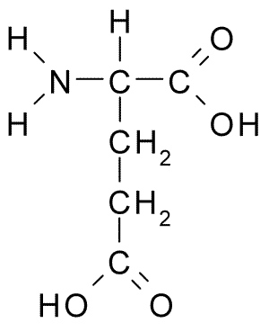

Aminoácidos
Ponto isoelétrico & aminoácidos
De modo geral o ponto isoelétrico, ou pI, representa o valor de pH em que uma molécula adquire uma carga líquida nula sob campo elétrico, ou seja, suas cargas positivas anulam-se com as cargas negativas. Normalmente é experimentalmente obtido por medidas cinéticas, tais como potencial Zeta, eletrofocalização ou eletroforese capilar. De modo similar, o ponto isoiônico refere-se à mesma condição, no entanto na ausência de campo elétrico, podendo ser aferido por titulação potenciométrica, viscosidade, ou pela informação estrutural de uma sequência monomérica, tal como ocorre na sequência primária de proteínas.
Como todos os 20 aminoácidos que participam da estrutura proteica possuem grupos ionizáveis, tanto em seu esqueleto carbônico como em sua cadeia lateral, é possível prever o ponto isoiônico de um aminoácido em função dos valores de pKa apresentados nesses grupos ionizáveis. O pI também é denominado comumente por ponto isoelétrico, embora essa definição encerre em si uma abrangência teórica mais complexa.
Como todos os 20 aminoácidos que participam da estrutura proteica possuem grupos ionizáveis, tanto em seu esqueleto carbônico como em sua cadeia lateral, é possível prever o ponto isoiônico de um aminoácido em função dos valores de pKa apresentados nesses grupos ionizáveis. O pI também é denominado comumente por ponto isoelétrico, embora essa definição encerre em si uma abrangência teórica mais complexa.
Exemplificando, o ácido glutâmico (Glu, E) apresenta um carboxilato ionizável em sua cadeia lateral, além dos grupos amina (-H\(_2\)N) e carboxilato do esqueleto carbônico Figura 1:
Dessa forma, sua rede de carga líquida, qnet, pode ser determinada a partir da soma da forma ácida (qa) e básica (qb) da molécula, de forma similar como a que foi apresentada a partir da equação \(\eqref{eq-HHfosf}\):
\[ qnet = qb + qa \tag{1}\]
\[ qnet = qb+\frac{1}{1+10^{pH-pKa}} \tag{2}\]
Como trata-se um ácido poliprótico, a Equação 2 torna-se:
\[ qnet = \sum_{i=1}^{n} {(qb+\frac{1}{1+10^{pH-pKi}})} \tag{3}\]
, com pKi como o enésimo valor de pKa. Dessa forma pode-se determinar programaticamente a curva de titulação do ácido glutâmico em função de sua carga, e não da fração ácida. Nessa linha, qb representa a forma do composto em base, o que para Glu apresentará os valores de -1 para os dois carboxilatos, e de 0 para o grupo amina, sendo necessário compor um vetor adicional para qb.
# Titulação de Glu
qNet <- function(pH, qB, pKa) {
x <- 0
for (i in 1:length(qB)) {
x <- x + qB[i] + 1 / (1 + 10^(pH - pKa[i]))
}
return(x)
}
qB <- c(-1, 0, -1)
pKa <- c(2.2, 9.7, 4.3)
curve(qNet(x, qB, pKa), 1, 12, xlab = "pH", ylab = "qNet")
abline(0, 0, lty = "dotted") Manualmente é possível identificar o valor de pI para o ácido glutâmico por uma função do R, tal como
locator() visto anteriormente. Mas também é possível acessar esse valor automaticamente, aplicando um comando que encontre a raíz dessa função, ou seja, o valor de pH que corresponda a um valor nulo para qnet. Para isto, exemplifica-se o uso de uniroot, no qual define-se a função matemática pretendida, bem como os limites inferior e superior para a busca pelo algoritmo, como segue:# Cálculo de pI
f <- function(pH) {
qNet(pH, qB, pKa)
}
str(uniroot(f, c(2, 5)))List of 5
$ root : num 3.25
$ f.root : num -4.8e-06
$ iter : int 4
$ init.it : int NA
$ estim.prec: num 6.1e-05 Esse resultado traduz-se como um pI de 3,25 (
Essa forma de se obter um valor empregando-se o cálculo numérico é por vezes denominada solução numérica. Por outro lado, pode-se obter o valor de pI para o Glu por um procedimento mais simples, normalmente encontrado nos livros-texto sobre o assunto, e que assume a forma abaixo:
root), em 4 iterações, com uma estimativa de precisão de 6,1x10\(^{-5}\), e erro associado de -4,8x10\(^{-6}\).Essa forma de se obter um valor empregando-se o cálculo numérico é por vezes denominada solução numérica. Por outro lado, pode-se obter o valor de pI para o Glu por um procedimento mais simples, normalmente encontrado nos livros-texto sobre o assunto, e que assume a forma abaixo:
\[ pI = \frac{pKa1+pKa2}{2} \tag{4}\]
No nosso exemplo, o pI envolverá os pKas dos dois carboxilatos, o que resultará em (2,3+4,2)/2, ou seja, 3,25 ! Nada mal para uma aproximação, não ? Esse procedimento envolvendo a solução de um problema matemático a partir de parâmetros do sistema é denominado método ou solução analítica. Essa solução também pode ser exemplificada pelo parâmetro obtido em função da observação do comportamento gráfico da titulação, como nas figuras acima.
Agora, pra que nos serve um procedimento numérico mais complexo, se uma simples equação analítica já nos resolve o problema de se encontrar o valor de pI para o ácido glutâmico ? Bom, extamente pra isso, para solução de problemas mais complexos. Um pouco menos retórico, entretanto, pode-se afirmar que a solução numérica funciona melhor para sistemas onde a solução analítica por vezes não é suficiente ou torna-se mesmo impossível, como na solução de equações com dezenas de parâmetros.
Ponto isoiônico & biopolímeros
Uma situção nesse tema pode ser ilustrada pela obtenção do valor de pI para uma proteína. Exemplificando, a lisozima humana, enzima de estrutura terciária composta por 130 resíduos de aminoácidos. Nesse caso, a solução analítica esbarra na complexidade em se identificar quais desses resíduos são ionizáveis em solução aquosa, e quais estariam envolvidos numa distribuição que resultasse numa carga líquida nula para a molécula.
Para esse sistema mais complexo é necessário ampliar um pouco a função definida para o ácido glutâmico, computando-se no vetor de qb as cargas em base dos 7 aminoácidos com cadeias laterais ionizáveis, e atribuir um novo vetor para o quantitativo de cada resíduo ionizável presente na lisozima. O código abaixo exemplifica essa solução, calcula o pI da enzima, e elabora o gráfico de sua titulação, embora essa ordem não seja relevante, posto que o pI é calculado numericamente, e não graficamente.
# Titulação de Lisozima e Determinação de pI
# Define função para qNet
qNet <- function(pH, qB, pKa, n) {
x <- 0
for (i in 1:length(qB)) {
x <- x + n[i] * qB[i] + n[i] / (1 + 10^(pH - pKa[i]))
}
return(x)
}
# Define pKas de aCOOH, aNH3 e as 7 cadeias laterais de AA
pKa <- c(2.2, 9.6, 3.9, 4.1, 6.0, 8.5, 10.1, 10.8, 12.5)
# Define qB, as cargas de cada aminoácido na forma básica
qB <- c(-1, 0, -1, -1, 0, -1, -1, 0, 0)
ionizavel <- c(
"aCOOH", "aNH3", "Asp", "Glu", "His", "Cys", "Tyr",
"Lys", "Arg"
)
n <- c(1, 1, 7, 3, 1, 8, 6, 5, 14) # Lista para quantidades de resíduos
# ionizáveis na lisozima (cada elemento representa a quantidade
# de aCOOH, aNH3, e determinado AA na enzima)
# Cálculo de pI
f <- function(pH) {
qNet(pH, qB, pKa, n)
}
str(uniroot(f, c(1, 13))) # estimativa de pI entre 10 e 12List of 5
$ root : num 9.46
$ f.root : num 3.3e-07
$ iter : int 7
$ init.it : int NA
$ estim.prec: num 6.1e-05# Gráfico de titulação
curve(qNet(x, qB, pKa, n), 1, 12, xlab = "pH", ylab = "qNet")
abline(0, 0, lty = 3) Observe que o valor encontrado para pI da lisozima foi de 9,46; ou seja, em pH 9,46 a enzima apresenta rede de carga líquida nula, como também pode ser verificado na representação gráfica.
Ponto isoiônico & bibliotecas do R
Não obstante a precisão do cálculo de pI pela solução numérica realizada para a lisozima, uma das características mais fascinantes do programa reside no uso de bibliotecas (
Entre as bibliotecas existentes para propriedades físico-químicas de proteínas e ácidos nucleicos exemplifica-se o pacote
packages), não sendo diferente para determinção de propriedades de biopolímeros, tais como pI.Entre as bibliotecas existentes para propriedades físico-químicas de proteínas e ácidos nucleicos exemplifica-se o pacote
seqinr, Biological Sequences Retrieval and Analysis 1, de análise e visualização exploratória de biopolímeros. Para uso desse pacote, contudo, faz-se necessário a obtenção da sequência primária da proteína, representada em código de uma letra. Pode-se obter a sequência primária da lisozima pelo sítio do National Center for Biotechnology Information, NCBI 2. Um truque rápido envolve:digitar o nome da proteína;
selecionar entre as opções resultantes;
clicar em FASTA para obter a sequência primária de 1 letra.
copiar a sequência da proteína apresentada para o
seqinr.
Presupondo-se que a biblioteca
seqinr esteja instalada, e que a sequência tenha sido obtida para a lisozima (busca por CAA32175 ou lysozyme [Homo sapiens]), pode-se encontrar o valor do pI para a mesma pelo código que segue:library(seqinr)
lisozima <- s2c("KVFERCELARTLKRLGMDGYRGISLANWMCLAKWESGYNTRATNYNAGDR
STDYGIFQINSRYWCNDGKTPGAVNACHLSCSALLQDNIADAVACAKRVV
RDPQGIRAWVAWRNRCQNRDVRQYVQGCGV")
# converte sequência de string em vetor de caracteres
computePI(lisozima)[1] 9.2778 Veja que o valor de pI pelo pacote, 9,28, foi bem próximo do encontrado pela solução numérica acima. Isto deve-se ao uso de algoritmos distintos para ambos, bem como o cômputo dos valores de pKa distintos para o
seqinr. Exemplificando essa variação, o próprio seqinr apresenta valores de pKa diferentes, em função da base de dados buscada. Para verificar isso, digite o comando abaixo e visualize e variável pK resultante.library(seqinr)
data(pK) Complementarmente, pode-se também comparar o valor de pI da lisozima com o algoritmo utilizado pelo banco de dados no sítio 3. Para isto, basta colar a sequência de resíduos no campo disponível e clicar o cômputo de pI. Veja que o valor resultante de 9,28 coincide com o do algoritmo utilizado pelo pacote
seqinr do R.library(knitr)
knitr::kable(pK, "pipe", caption = "Tabela de valores de pKa para aminoácidos
a partir de diversas fontes, extraída do pacote seqinr.")| Bjellqvist | EMBOSS | Murray | Sillero | Solomon | Stryer | |
|---|---|---|---|---|---|---|
| C | 9.00 | 8.5 | 8.33 | 9.0 | 8.3 | 8.5 |
| D | 4.05 | 3.9 | 3.68 | 4.0 | 3.9 | 4.4 |
| E | 4.45 | 4.1 | 4.25 | 4.5 | 4.3 | 4.4 |
| H | 5.98 | 6.5 | 6.00 | 6.4 | 6.0 | 6.5 |
| K | 10.00 | 10.8 | 11.50 | 10.4 | 10.5 | 10.0 |
| R | 12.00 | 12.5 | 11.50 | 12.0 | 12.5 | 12.0 |
| Y | 10.00 | 10.1 | 10.07 | 10.0 | 10.1 | 10.0 |
Existem outros pacotes do R que analisam sequências de aminoácidos e nucleotídeos, incluindo o cálculo de pI, entre os quais vale mencionar o Peptides 4.